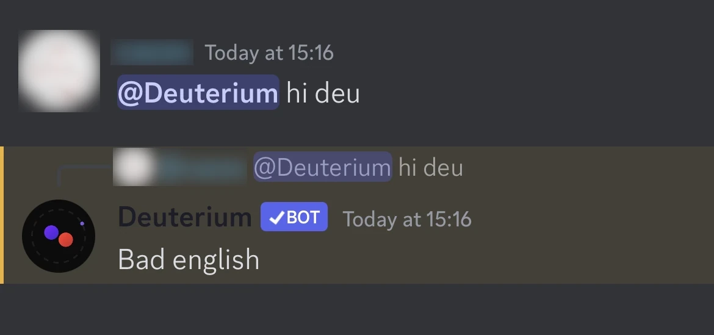
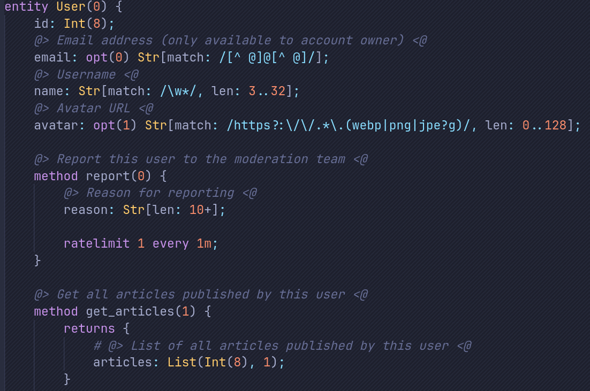
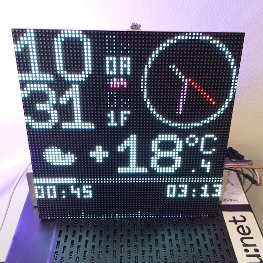
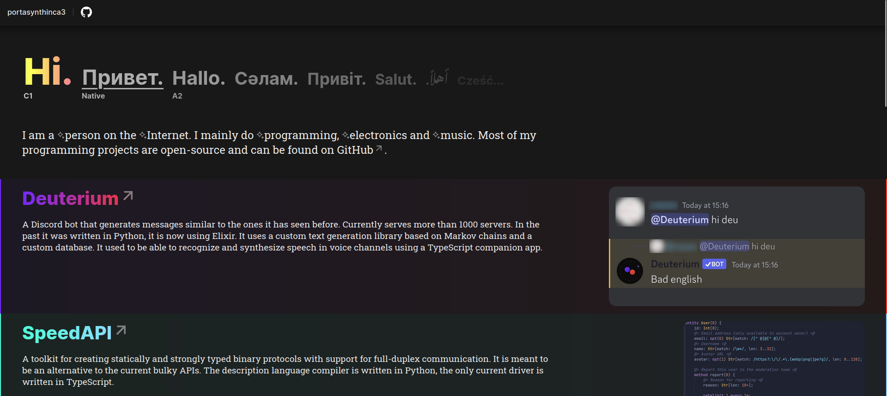
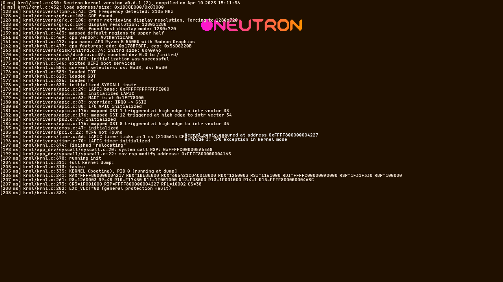

| Hi. | Привет. | Hallo. | Cәлам. | Привіт. | Salut. | .أهلاً | Cześć... |
| C1 | Native | A2 |
I am a person on the Internet. I mainly do programming, electronics and music. Most of my programming projects are open-source and can be found on GitHub.

Deuterium
A Discord bot that generates messages similar to the ones it has seen before. Currently serves more than 1000 servers. In the past it was written in Python, it is now using Elixir. It uses a custom text generation library based on Markov chains and a custom database. It used to be able to recognize and synthesize speech in voice channels using a TypeScript companion app.

SpeedAPI
A toolkit for creating statically and strongly typed binary protocols with support for full-duplex communication. It is meant to be an alternative to the current bulky APIs. The description language compiler is written in Python, the only current driver is written in TypeScript.

LED panel
Enjoys rays of sunlight sitting on the windowsill in the beautifiul undef.space. Tells the time, shows the weather, the audio spectrum with a smiling cat underneath it and the CO2 concentration in the room. Uses the ESP32 MCU, the ESP-IDF framework and is written in C.

This website
Written in WASM assembly. Renders the page and transfers the framebuffer into a canvas in real time. I'm joking. Would be cool to work on a project like this though 🤔
↓ Dead projects
Yamka
A messenger similar to Discord that supported end-to-end encryption in direct messages. Used a binary protocol that formed the basis of the future SpeedAPI. The backend was written in Erlang, the frontend was written in HTML, CSS and TypeScript without any frameworks.

Neutron
An operating system for personal computers using the x86-64 architecture. The OS kernel was able to initialize select pieces of hardware, as well as load and execute applications from disk. The distribution around that kernel supplied a basic initialization system and a graphical shell. It was written in C.
Игры
Actually, I've been trying to make games since the early days of my programming journey, but I could never really make it in this area. Those were mainly small projects made with Unity in C#.
-
I have touched almost all areas of application development
- Game development and machine learning are my least favorite areas
- Low-level and embedded development are my most favorite areas
- I like LED strips and panels way too much
- I am allergic to C++ and Java
- Music is love. Music is life.
- Currently residing in Moscow
- i've heard of a girl with the same name where i live - Toma
- anna you're so cool!! - Kamilla 'ova
- puns are as amusing as interacting with a door - lukflug
- I wouldn't call it very big - lukflug (Deuterium) [BOT]